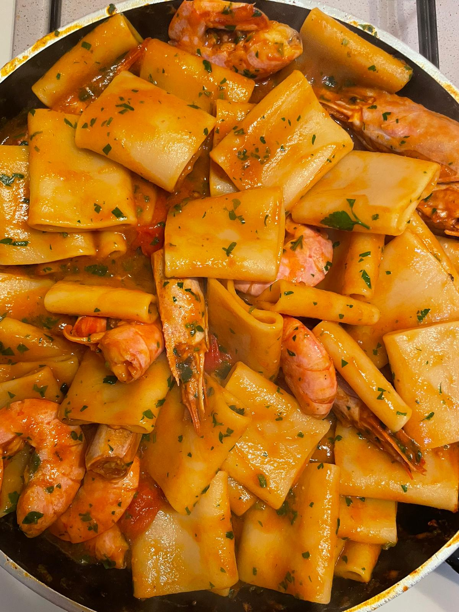

Paccheri ai gamberi, un primo che stupirà i vostri amici

Tempo di preparazione: 10 minuti
Tempo cottura: 15/20 minuti
Difficoltà: facile
Ingredienti per 2 persone:
- 300 grammi di paccheri
- 400 grammi di gamberi freschi
- 9/10 pomodorini
- Salsa di pomodorini ciliegino
- Prezzemolo Fresco
- Vino bianco
- Olio qb
- Aglio qb
- Peperoncino qb
- Sale qb
Passaggi:
- Mettere un bel giro d'olio evo in una padella, scaldare e aggiungere l'aglio e del peperoncino. Lasciar cuocere fino a quando l'aglio non risulterà dorato.
- Aggiungere i pomodorini, le teste dei gamberi e cuocerli a fuoco medio per un paio di minuti.
Aggiungere mezzo bicchiere di vino bianco e far sfumare a fuoco alto.
- Dopo aver portato a ebollizione dell'acqua salata, calare i paccheri.
- A questo punto rimuovere l'aglio e unire la salsa di datterini, lasciando cuocere per una decina di minuti e avendo cura di
aggiungere dell'acqua di cottura della pasta se il condimento risulta poco cremoso.
- A pochi minuti dalla fine della cottura dei paccheri, aggiungere le code dei gamberi al condimento.
Terminare la cottura risottando la pasta con il condimento, stando attenti ad aggiungere dell'acqua di cottura se necessario.
- Unire il prezzemolo tagliato finemente, quindi mescolare e servire caldi.